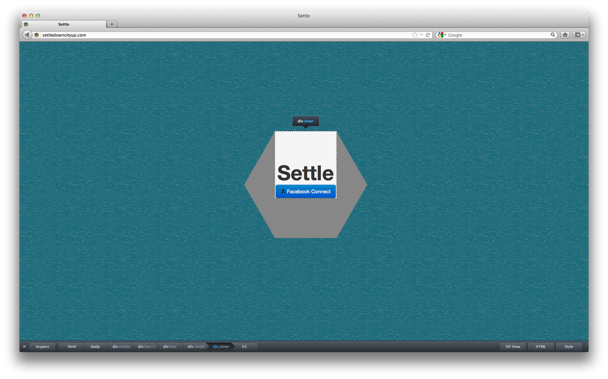
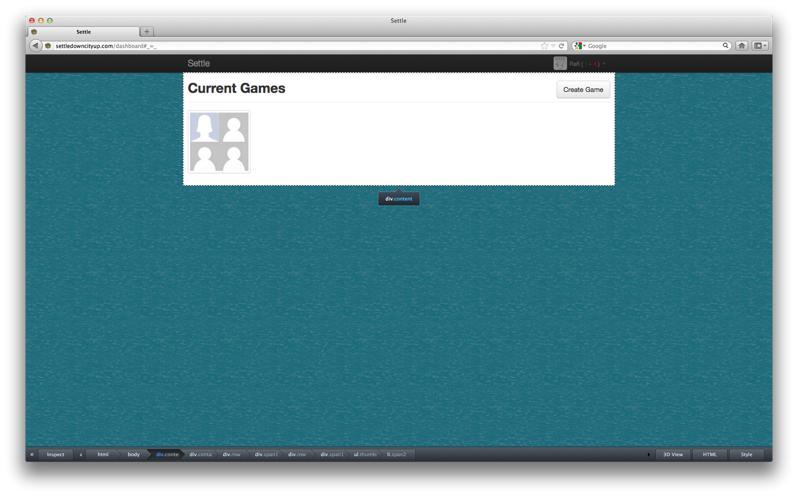
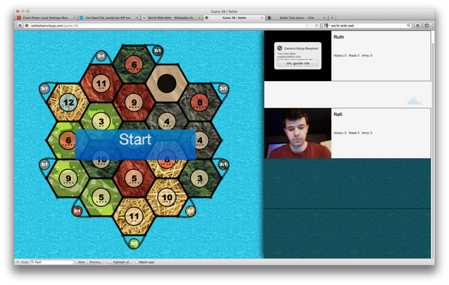
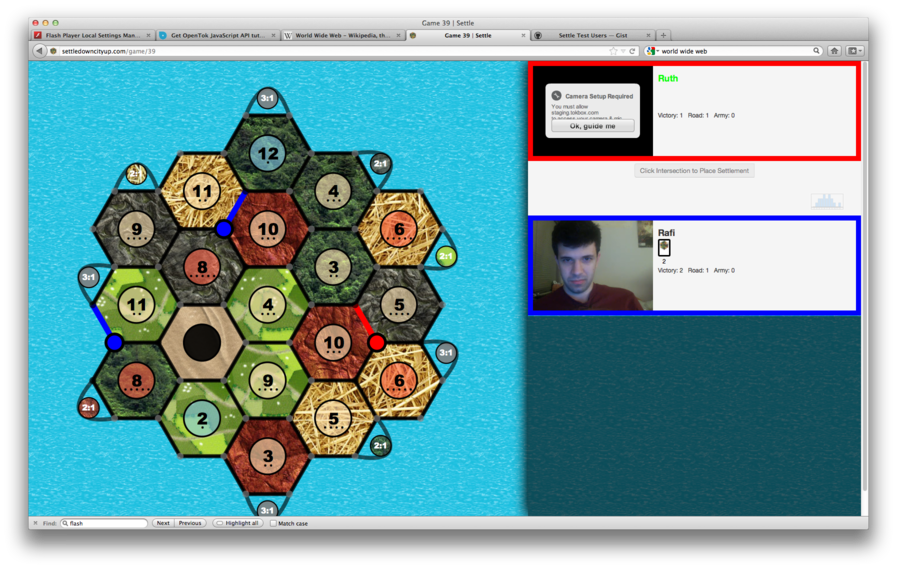
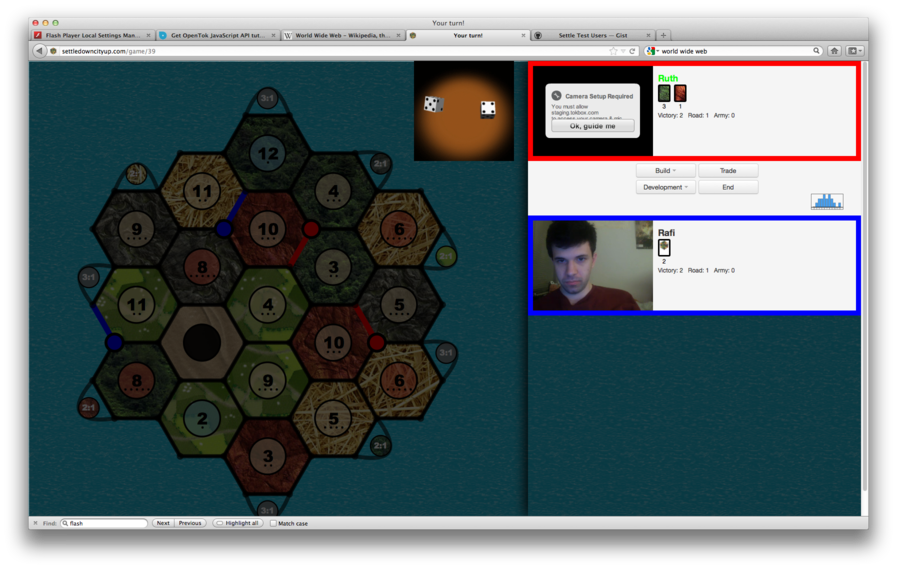
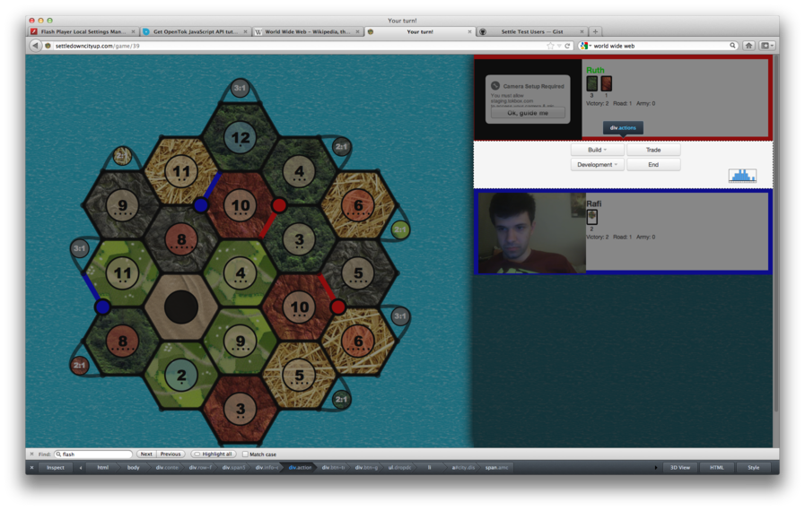
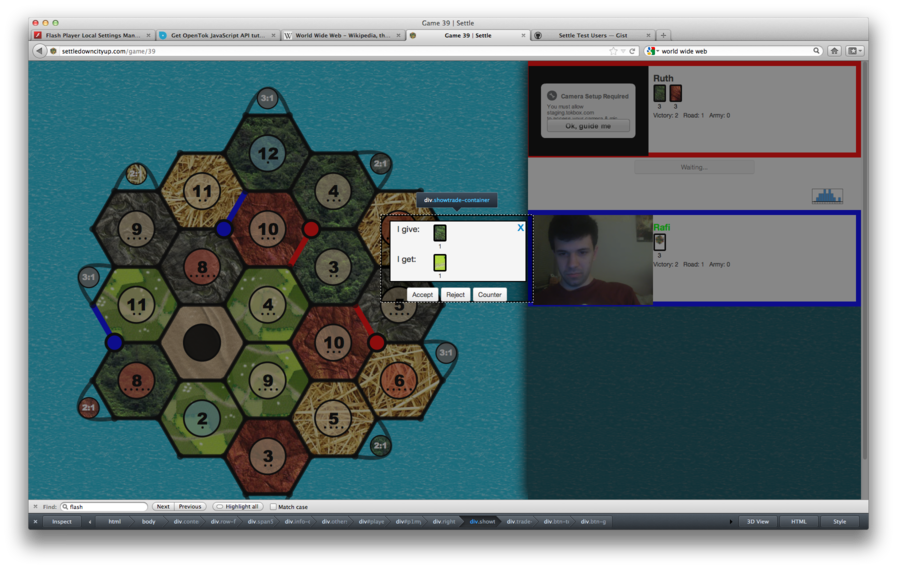
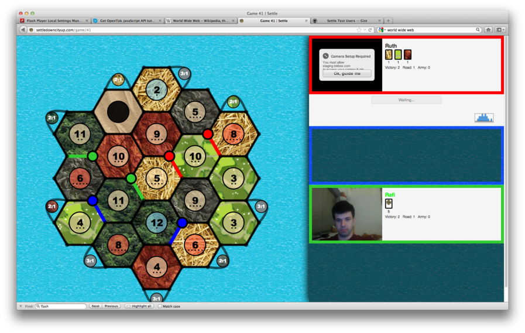
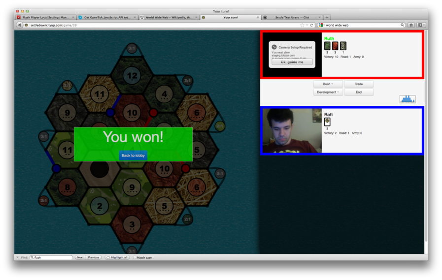

To begin using our Settlers of Catan game, point your browser to www.SettleDownCityUp.com . (We suggest playing our game in full screen, or at least by making the browser window as big as possible. Also, while the game should work on most browsers, we tested it mostly on Google Chrome and advise using that.) Upon arriving you will see our splash page, as seen below. Click Facebook Connect to begin.

Facebook will ask you to login and allow access to our Settle app. After doing so, you will arrive at our Dashboard page, which is where you will join or create a game.

The dashboard page shows all games that are about to start. This live updates as users create, join, and leave games. To begin, either click Create Game or click a currently existing game.

Upon joining or creating a game, you will be brought to that game’s page. Depending on your adobe flash permissions, you may need to follow some special directions or click allow to let the site have access to your camera. (Also, the video box may expand out of the player box; this is intentional and is designed to make the video box fit the dialog it contains.) As players join, you will see them below on the right. When you are all ready to begin, click the Start button.

At this point, the game Settlers of Catan begins. If you are unfamiliar with the rules, you can read them at http://www.catan.com/en/download/?SoC_rv_Rules_091907.pdf . The game starts with the initial settlements phase. Each player places two settlements and two roads. Options that can be clicked are marked and made clickable. Once the initial settlement picking ends, the turns begin.

On your turn, you begin by rolling the dice. You can opt to play a knight card before this, if you have one. Resources are distributed according to the dice roll, or the robber piece is moved. Then, you can build (buy) something, play a development card, offer a trade, or end your turn.

On other people’s turns, you can receive resources according to dice rolls, and you can accept trades. You can also be affected by the robber or monopoly development cards.

During play, if a player accidentally or deliberately closes the window, they are first warned and asked if they wish to go through with it. If they choose to leave the game, they are ejected from the game, they forfeit all their possessions, their player box is grayed out, and they are skipped for the rest of the game.

The game ends with the first player to reach ten victory points. At this point, the winner is announced and all players are given a button to return to the dashboard page. Your name at the top right shows your newly updated record. From here, you can create or join new games.
